Mobile voice interface for Claude Code — user guide
On first launch the app will ask you to set a password. It protects access to the app and encrypts the conversation history and connection data.
After setting the password, a PIN entry screen will appear on every launch. Auto-lock after a configured period of inactivity — configurable in the Security section.
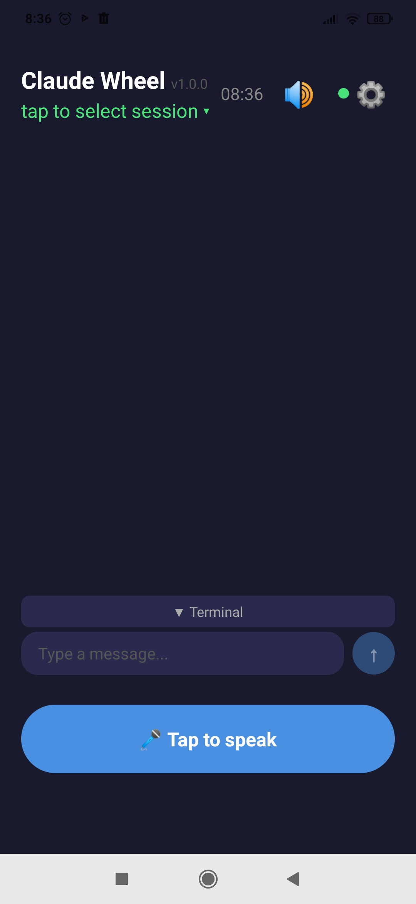
The main screen consists of several zones:
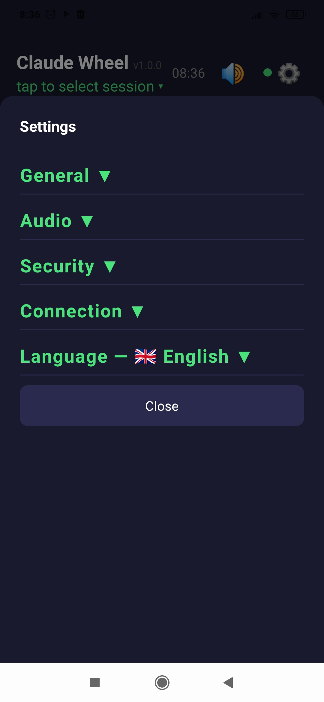
Settings are opened with the ⚙️ button in the top-right corner. Divided into five sections:
Enabled by default. In this mode, requests to a single session are processed strictly one at a time — the next request waits until the previous one receives a response.
Multi-user mode. The app allows multiple users to connect to the same Claude session simultaneously — from different phones. The lock prevents conflicts: if one user has already sent a request, the second user's request will be queued and processed after the response is received. Without the lock, both requests would enter the session at the same time, which can lead to unpredictable behavior.
Single-user mode. If you work alone — the lock can be disabled. This lets you send a new request without waiting for a response to the previous one, for example in parallel with working in the terminal on your computer. On login and when switching sessions the app will remind you that the lock is disabled.
Haptic feedback when a session hangs: Off / Light / Medium / Heavy.
Time in seconds without changes on the terminal screen, after which the session is considered hung. Default is 20 seconds.
Font size for chat messages and terminal text. Range 8–40, default 15. Useful to increase if the screen is small or you need larger text.
Height of the terminal panel in lines. The actual height is limited by the screen size — the panel will not exceed screen bounds even if you set a large value.
Base folder for new sessions on the server, e.g. /home/user/projects. The working directory of a new session must be inside it or in one of its subdirectories. Required for creating new sessions.
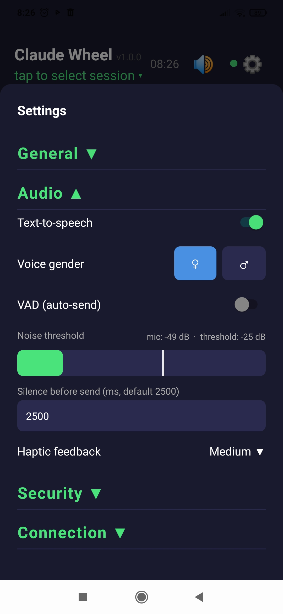
Enable or disable reading Claude's responses aloud. Also available as a quick toggle with the 🔊/🔇 button in the main screen header.
Choose the voice for reading responses: ♀ female or ♂ male. Applies to all languages.
Automatic voice activity detection mode. The app detects the start of speech and sends the message after a pause — no button press needed.
The sound level bar shows the current microphone level — it is active when the Audio section is open. The white vertical line is the threshold: everything above it is treated as voice and triggers recording in VAD mode.
Drag the line with your finger to adjust the threshold. In silence the bar is empty (as in the screenshot). When speaking — the bar fills up: green if below the threshold, red if above.
Adjust so that background noise stays to the left of the line, and your voice goes to the right.
Silence pause in milliseconds after which VAD sends the recording. Default is 2500 ms (2.5 seconds).
Haptic feedback at the moment voice recording starts: Off / Light / Medium / Heavy.
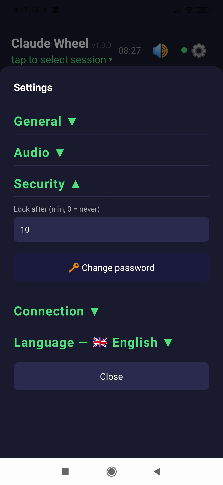
Inactivity time in minutes after which the app locks and asks for the password. Value 0 — never lock automatically.
Activity is any screen touch, as well as sending and receiving messages — so in VAD mode the timer also resets with each exchange.
Change the password. You will need to enter the current password, then the new one twice. When the password is changed, all data is automatically re-encrypted with the new key.
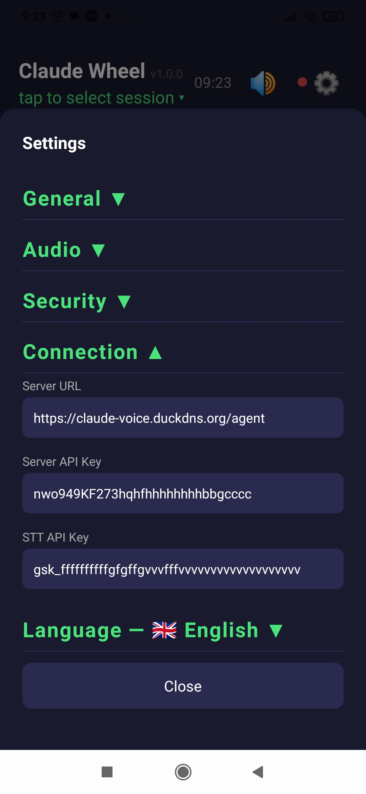
Fill in the fields:
1. Home Wi-Fi
Phone and computer on the same network. Find the computer's IP and connect directly via HTTP (limited to network range).
2. Public IP + domain + trusted certificate
If you have a server with a public IP, you will need a domain name and a trusted certificate (if you don't have them yet — you can get them for free via DuckDNS and Let's Encrypt).
3. Public IP + self-signed certificate
Generate a certificate with the required IP in the SAN field, install it on the phone as a trusted CA
and connect directly by IP without a domain.
4. Tailscale + HTTP
If you don't have a public IP — install Tailscale
on the server and phone. Traffic goes through an encrypted WireGuard tunnel, so HTTP inside it
is secure. No certificates needed.
Detailed connection description in the server documentation.
Choose the language for speech recognition and response synthesis. The current language is shown in the section header.
Available languages: Chinese, English, French, German, Japanese, Russian, Spanish.
By default the app works in manual mode. Full cycle of one request:
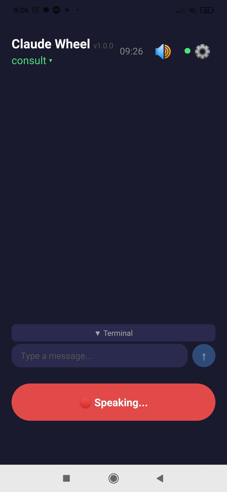
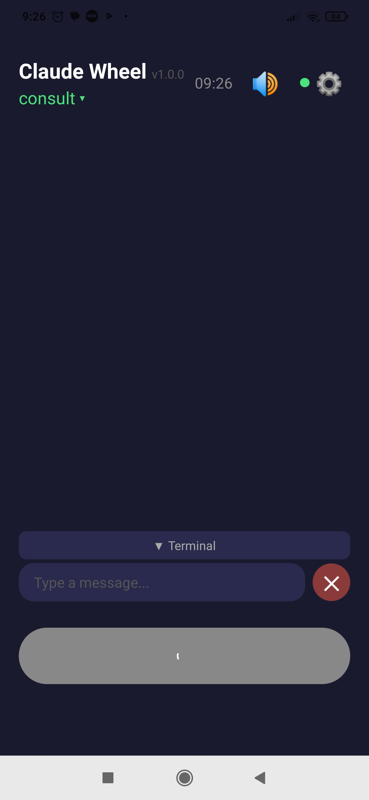
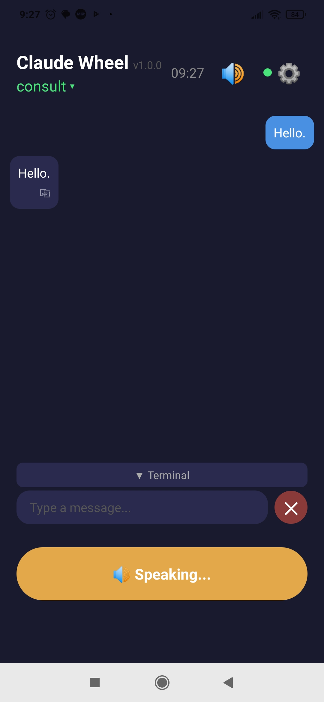
In Audio settings enable the VAD (auto-send) toggle. Now the app detects the start of speech and automatically sends the message after a pause — no button press needed, hands are free.
At the bottom of the screen there is a text input field. Useful when you need to send precise data — code, a link, specific terms — that cannot be said by voice, or when voice control is not possible.
Sometimes during operation Claude requires confirmation for its actions. In this case execution pauses and the session hangs. The app monitors the Claude session screen state and, if it does not change for longer than the configured interval (General → Hang timeout), the Terminal label turns red and the phone may vibrate (configured in General → Haptic on hang).
Tap ▼ Terminal to open the panel with the Claude session screen and see what is happening. The terminal loads up to 2000 lines of history and updates every 2 seconds. History can be scrolled with a finger.
Panel height and font size are configured in General → Terminal lines and General → Font size.
Available control keys:
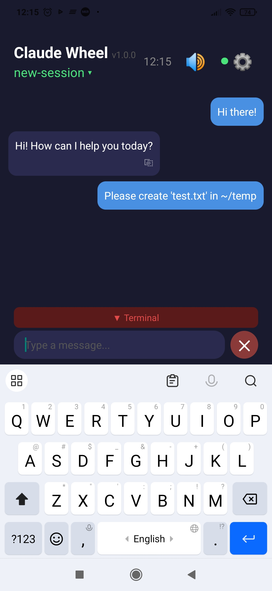
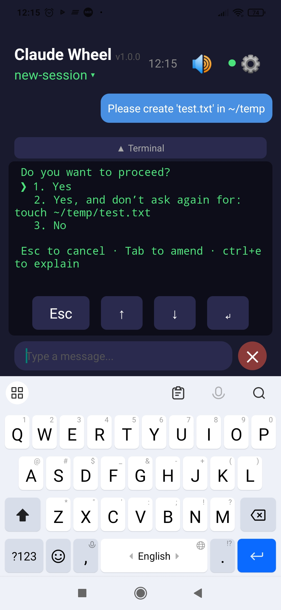
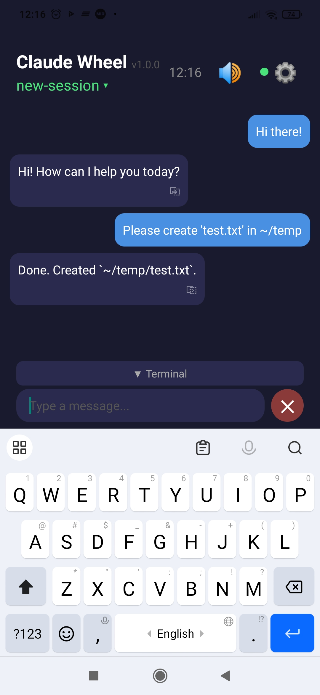
Example: Claude is asking permission to perform an action. Three response options are visible. Select the one you need with the arrows and press Enter.
Tap the session name below the app header to open the session list.
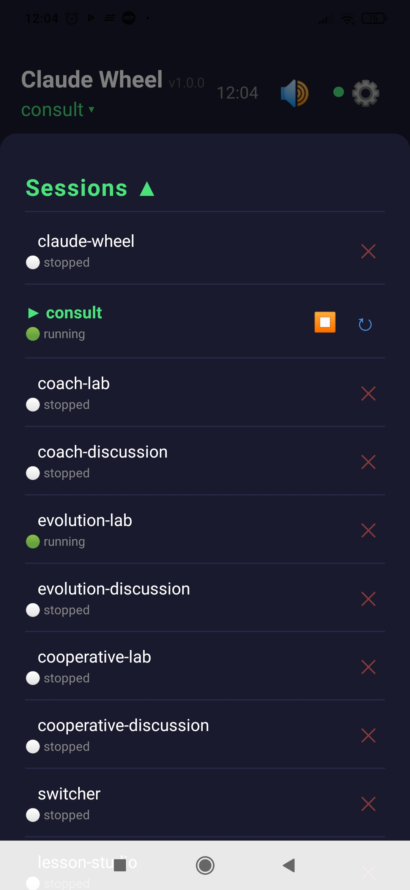
Tap a session to switch to it. The app remembers the last session and automatically restores it after a restart.
⏹ next to the active session — end the session: stops tmux and locks the app to the PIN screen.
↻ next to the active session — recreate with a fresh context.
✕ next to an inactive session — remove from the list.
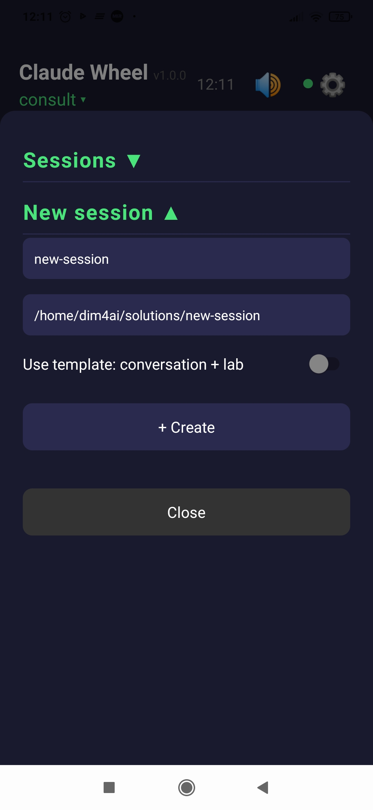
Expand the New session section:
name-discussion and name-lab in separate folders with a ready-made CLAUDE.mdSplits project work into two specialized sessions:
Each session gets its own CLAUDE.md with role instructions. Shared project files STATUS.md and CONTEXT.md are created in the root of the project folder and are accessible to both sessions.
The split reduces the context load on each session and helps Claude stay in its role — not getting distracted by implementation details during discussion or by philosophy when writing code.
All sensitive data is stored locally on the phone in encrypted form. The encryption key is never saved anywhere — it is derived from the password on every login and exists only in memory.
You will need Node.js and an account on Expo.
cd claude-wheel-mobile npm install
npx eas login
npx eas build -p android --profile preview
The build runs on Expo servers. When complete, a download link for the APK will be sent to your email and appear in your account on expo.dev.
npx expo start and open it in the Expo Go app on your phone.